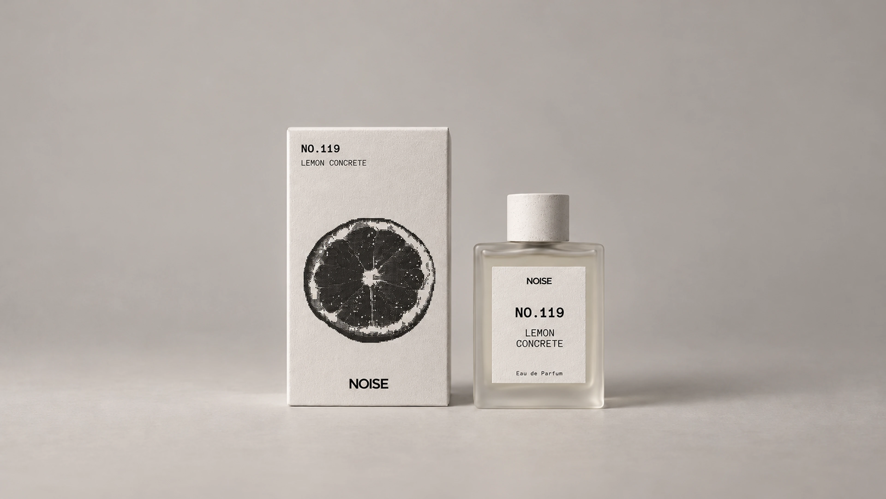
NOISE
BLUR THE WORLD. SHARPEN THE SCENT.
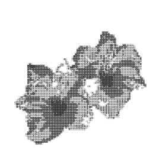
Feel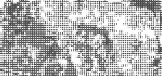
thetemperature.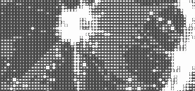
눈에 보이는 것 너머,
향으로 남는 감각.
One letter shifts. A different sense begins.
One letter shifts. A different sense begins.
(01)OUR PHILOSOPHY
Less to 
see.
More to sense. 
시각을 잠시 내려놓고, 향에 집중하는 순간.
NOISE는 그 작은 전환에서 시작합니다.
(02)TWO FREQUENCIES
One world.
Two ways to feel.
깊이 머무는 감각과 가볍게 번지는 감각.
서로 다른 두 주파수 사이에서,
당신에게 가까운 향을 탐색하세요.
RUSTED CAR
(03)THE COLLECTION
(04)THE SCENTS
(03)THE COLLECTION
Ten scents.
A personal frequency.
이름에서 시작하는 향의 탐색.
카드를 열어 감각의 인상을 읽어보세요.
LEMON CONCRETE
WHITE LILY
SEA SALT
SNOW
ROCK
RUSTED CAR
BLACK FIG
OLD CABIN
COLD MOON
(05)FIND YOUR NOISE
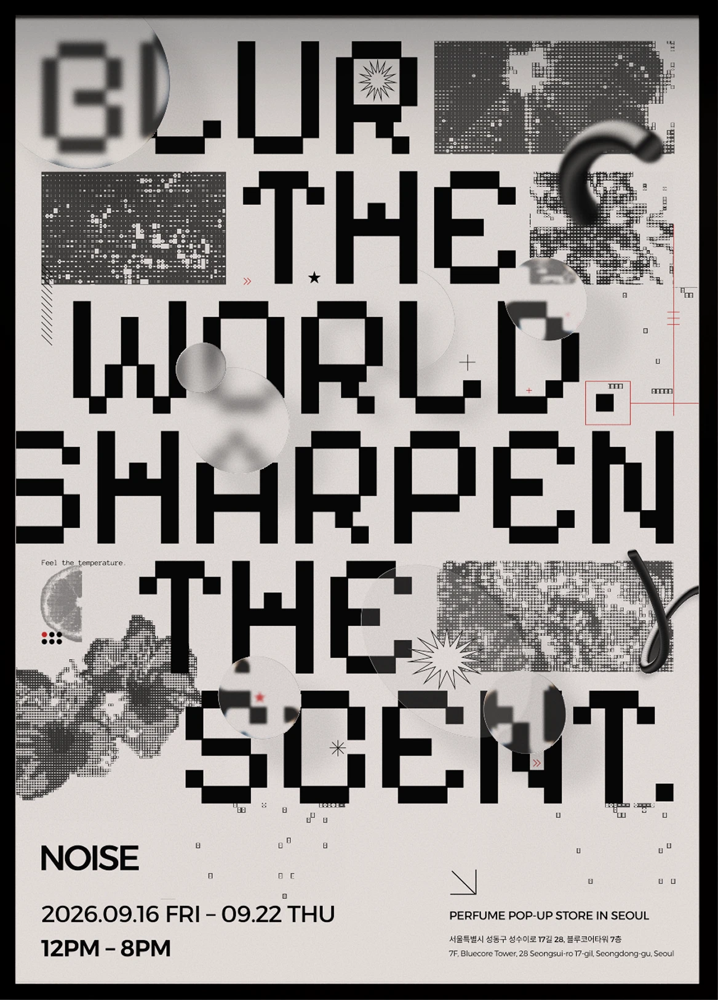
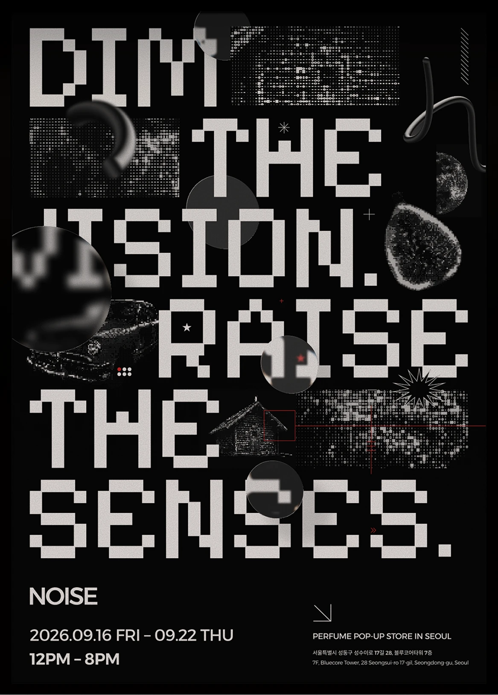
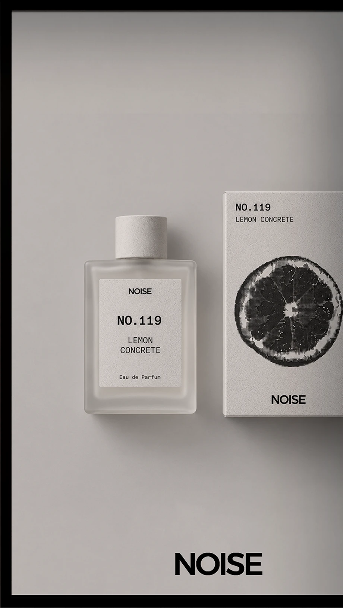
오프라인에서 만날 NOISE의 감각을 살펴보세요.
매장 안내 준비 중